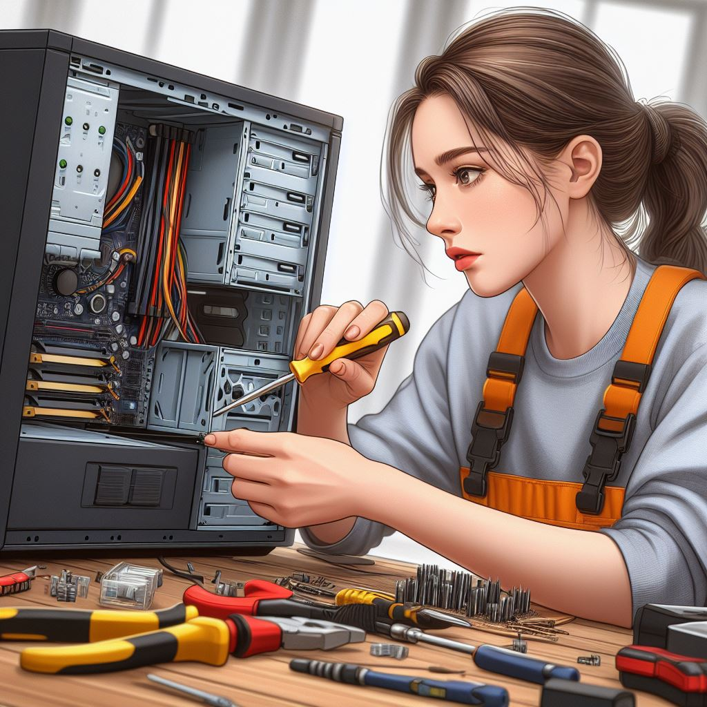

Nuestra Misión de Reciclaje
Somos apasionados por el reciclaje y la reutilización de equipos informáticos para reducir el desperdicio electrónico y promover la sostenibilidad. Nuestro compromiso se refleja en cada paso de nuestro proceso de reciclaje, desde la recolección de equipos obsoletos hasta la reparación y reacondicionamiento de aquellos en buen estado. Nos esforzamos por realizar un reciclaje responsable de materiales no reutilizables, contribuyendo así a la preservación del medio ambiente.
¿Cómo Reciclamos?
Nuestro proceso de reciclaje se inicia con la recolección de equipos electrónicos obsoletos. Posteriormente, llevamos a cabo el desmontaje y la separación de componentes para maximizar el aprovechamiento de los materiales. Los equipos en buen estado son sometidos a reparación y reacondicionamiento, mientras que los materiales no reutilizables son reciclados de manera responsable, siguiendo las mejores prácticas ambientales.
Beneficios del Reciclaje
El reciclaje de equipos informáticos va más allá de la simple reducción del desperdicio. Contribuye activamente a la disminución de la contaminación ambiental y a la promoción de la sostenibilidad. Entre los beneficios destacados se encuentran la reducción de la huella de carbono, la promoción de la economía circular y el acceso a tecnología asequible y de calidad.
- Reducción de la huella de carbono.
- Promoción de la economía circular.

- Acceso a tecnología asequible y de calidad.
- Apoyo a comunidades desfavorecidas mediante donaciones de equipos.
- Participación en proyectos de responsabilidad social corporativa.
- Colaboración activa para alcanzar un futuro más sostenible y equitativo.